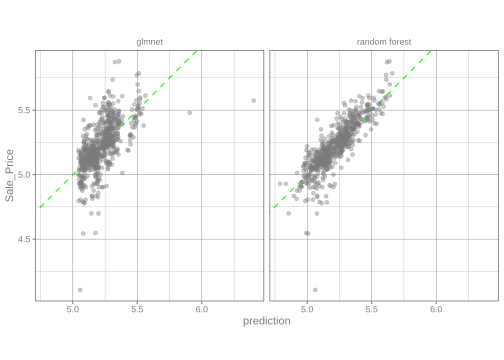

library(tidymodels)
data(ames)
set.seed(4595)
data_split <- initial_split(ames, strata = "Sale_Price", prop = 0.75)
ames_train <- training(data_split)
ames_test <- testing(data_split)Regression models two ways
model fitting
parsnip
regression
Create and train different kinds of regression models with different computational engines.
Introduction
To use code in this article, you will need to install the following packages: glmnet, randomForest, ranger, and tidymodels.
We can create regression models with the tidymodels package parsnip to predict continuous or numeric quantities. Here, let’s first fit a random forest model, which does not require all numeric input (see discussion here) and discuss how to use fit() and fit_xy(), as well as data descriptors.
Second, let’s fit a regularized linear regression model to demonstrate how to move between different types of models using parsnip.
The Ames housing data
We’ll use the Ames housing data set to demonstrate how to create regression models using parsnip. First, set up the data set and create a simple training/test set split:
The use of the test set here is only for illustration; normally in a data analysis these data would be saved to the very end after many models have been evaluated.
Random forest
We’ll start by fitting a random forest model to a small set of parameters. Let’s create a model with the predictors Longitude, Latitude, Lot_Area, Neighborhood, and Year_Sold. A simple random forest model can be specified via:
rf_defaults <- rand_forest(mode = "regression")
rf_defaults
#> Random Forest Model Specification (regression)
#>
#> Computational engine: rangerThe model will be fit with the ranger package by default. Since we didn’t add any extra arguments to fit, many of the arguments will be set to their defaults from the function ranger::ranger(). The help pages for the model function describe the default parameters and you can also use the translate() function to check out such details.
The parsnip package provides two different interfaces to fit a model:
Let’s start with the non-formula interface:
preds <- c("Longitude", "Latitude", "Lot_Area", "Neighborhood", "Year_Sold")
rf_xy_fit <-
rf_defaults %>%
set_engine("ranger") %>%
fit_xy(
x = ames_train[, preds],
y = log10(ames_train$Sale_Price)
)
rf_xy_fit
#> parsnip model object
#>
#> Ranger result
#>
#> Call:
#> ranger::ranger(x = maybe_data_frame(x), y = y, num.threads = 1, verbose = FALSE, seed = sample.int(10^5, 1))
#>
#> Type: Regression
#> Number of trees: 500
#> Sample size: 2197
#> Number of independent variables: 5
#> Mtry: 2
#> Target node size: 5
#> Variable importance mode: none
#> Splitrule: variance
#> OOB prediction error (MSE): 0.008500188
#> R squared (OOB): 0.7239116The non-formula interface doesn’t do anything to the predictors before passing them to the underlying model function. This particular model does not require indicator variables (sometimes called “dummy variables”) to be created prior to fitting the model. Note that the output shows “Number of independent variables: 5”.
For regression models, we can use the basic predict() method, which returns a tibble with a column named .pred:
test_results <-
ames_test %>%
select(Sale_Price) %>%
mutate(Sale_Price = log10(Sale_Price)) %>%
bind_cols(
predict(rf_xy_fit, new_data = ames_test[, preds])
)
test_results %>% slice(1:5)
#> # A tibble: 5 × 2
#> Sale_Price .pred
#> <dbl> <dbl>
#> 1 5.39 5.25
#> 2 5.28 5.29
#> 3 5.23 5.26
#> 4 5.21 5.30
#> 5 5.60 5.51
# summarize performance
test_results %>% metrics(truth = Sale_Price, estimate = .pred)
#> # A tibble: 3 × 3
#> .metric .estimator .estimate
#> <chr> <chr> <dbl>
#> 1 rmse standard 0.0945
#> 2 rsq standard 0.733
#> 3 mae standard 0.0629Note that:
- If the model required indicator variables, we would have to create them manually prior to using
fit()(perhaps using the recipes package). - We had to manually log the outcome prior to modeling.
Now, for illustration, let’s use the formula method using some new parameter values:
rand_forest(mode = "regression", mtry = 3, trees = 1000) %>%
set_engine("ranger") %>%
fit(
log10(Sale_Price) ~ Longitude + Latitude + Lot_Area + Neighborhood + Year_Sold,
data = ames_train
)
#> parsnip model object
#>
#> Ranger result
#>
#> Call:
#> ranger::ranger(x = maybe_data_frame(x), y = y, mtry = min_cols(~3, x), num.trees = ~1000, num.threads = 1, verbose = FALSE, seed = sample.int(10^5, 1))
#>
#> Type: Regression
#> Number of trees: 1000
#> Sample size: 2197
#> Number of independent variables: 5
#> Mtry: 3
#> Target node size: 5
#> Variable importance mode: none
#> Splitrule: variance
#> OOB prediction error (MSE): 0.008402569
#> R squared (OOB): 0.7270823Suppose that we would like to use the randomForest package instead of ranger. To do so, the only part of the syntax that needs to change is the set_engine() argument:
rand_forest(mode = "regression", mtry = 3, trees = 1000) %>%
set_engine("randomForest") %>%
fit(
log10(Sale_Price) ~ Longitude + Latitude + Lot_Area + Neighborhood + Year_Sold,
data = ames_train
)
#> parsnip model object
#>
#>
#> Call:
#> randomForest(x = maybe_data_frame(x), y = y, ntree = ~1000, mtry = min_cols(~3, x))
#> Type of random forest: regression
#> Number of trees: 1000
#> No. of variables tried at each split: 3
#>
#> Mean of squared residuals: 0.008472074
#> % Var explained: 72.47Look at the formula code that was printed out; one function uses the argument name ntree and the other uses num.trees. The parsnip models don’t require you to know the specific names of the main arguments.
Now suppose that we want to modify the value of mtry based on the number of predictors in the data. Usually, a good default value is floor(sqrt(num_predictors)) but a pure bagging model requires an mtry value equal to the total number of parameters. There may be cases where you may not know how many predictors are going to be present when the model will be fit (perhaps due to the generation of indicator variables or a variable filter) so this might be difficult to know exactly ahead of time when you write your code.
When the model is being fit by parsnip, data descriptors are made available. These attempt to let you know what you will have available when the model is fit. When a model object is created (say using rand_forest()), the values of the arguments that you give it are immediately evaluated unless you delay them. To delay the evaluation of any argument, you can used rlang::expr() to make an expression.
Two relevant data descriptors for our example model are:
-
.preds(): the number of predictor variables in the data set that are associated with the predictors prior to dummy variable creation. -
.cols(): the number of predictor columns after dummy variables (or other encodings) are created.
Since ranger won’t create indicator values, .preds() would be appropriate for mtry for a bagging model.
For example, let’s use an expression with the .preds() descriptor to fit a bagging model:
rand_forest(mode = "regression", mtry = .preds(), trees = 1000) %>%
set_engine("ranger") %>%
fit(
log10(Sale_Price) ~ Longitude + Latitude + Lot_Area + Neighborhood + Year_Sold,
data = ames_train
)
#> parsnip model object
#>
#> Ranger result
#>
#> Call:
#> ranger::ranger(x = maybe_data_frame(x), y = y, mtry = min_cols(~.preds(), x), num.trees = ~1000, num.threads = 1, verbose = FALSE, seed = sample.int(10^5, 1))
#>
#> Type: Regression
#> Number of trees: 1000
#> Sample size: 2197
#> Number of independent variables: 5
#> Mtry: 5
#> Target node size: 5
#> Variable importance mode: none
#> Splitrule: variance
#> OOB prediction error (MSE): 0.00867085
#> R squared (OOB): 0.7183685Regularized regression
A linear model might work for this data set as well. We can use the linear_reg() parsnip model. There are two engines that can perform regularization/penalization, the glmnet and sparklyr packages. Let’s use the former here. The glmnet package only implements a non-formula method, but parsnip will allow either one to be used.
When regularization is used, the predictors should first be centered and scaled before being passed to the model. The formula method won’t do that automatically so we will need to do this ourselves. We’ll use the recipes package for these steps.
norm_recipe <-
recipe(
Sale_Price ~ Longitude + Latitude + Lot_Area + Neighborhood + Year_Sold,
data = ames_train
) %>%
step_other(Neighborhood) %>%
step_dummy(all_nominal()) %>%
step_center(all_predictors()) %>%
step_scale(all_predictors()) %>%
step_log(Sale_Price, base = 10) %>%
# estimate the means and standard deviations
prep(training = ames_train, retain = TRUE)
# Now let's fit the model using the processed version of the data
glmn_fit <-
linear_reg(penalty = 0.001, mixture = 0.5) %>%
set_engine("glmnet") %>%
fit(Sale_Price ~ ., data = bake(norm_recipe, new_data = NULL))
glmn_fit
#> parsnip model object
#>
#>
#> Call: glmnet::glmnet(x = maybe_matrix(x), y = y, family = "gaussian", alpha = ~0.5)
#>
#> Df %Dev Lambda
#> 1 0 0.00 0.138300
#> 2 1 1.96 0.126000
#> 3 1 3.72 0.114800
#> 4 1 5.28 0.104600
#> 5 2 7.07 0.095320
#> 6 3 9.64 0.086850
#> 7 4 12.58 0.079140
#> 8 5 15.45 0.072110
#> 9 5 17.93 0.065700
#> 10 7 20.81 0.059860
#> 11 7 23.51 0.054550
#> 12 7 25.82 0.049700
#> 13 8 28.20 0.045290
#> 14 8 30.31 0.041260
#> 15 8 32.12 0.037600
#> 16 8 33.66 0.034260
#> 17 8 34.97 0.031210
#> 18 8 36.08 0.028440
#> 19 8 37.02 0.025910
#> 20 9 37.90 0.023610
#> 21 9 38.65 0.021510
#> 22 9 39.29 0.019600
#> 23 9 39.83 0.017860
#> 24 9 40.28 0.016270
#> 25 10 40.68 0.014830
#> 26 11 41.06 0.013510
#> 27 11 41.38 0.012310
#> 28 11 41.65 0.011220
#> 29 11 41.88 0.010220
#> 30 12 42.09 0.009313
#> 31 12 42.27 0.008486
#> 32 12 42.43 0.007732
#> 33 12 42.56 0.007045
#> 34 12 42.66 0.006419
#> 35 12 42.75 0.005849
#> 36 12 42.83 0.005329
#> 37 12 42.90 0.004856
#> 38 12 42.95 0.004424
#> 39 12 42.99 0.004031
#> 40 12 43.03 0.003673
#> 41 12 43.06 0.003347
#> 42 12 43.09 0.003050
#> 43 12 43.11 0.002779
#> 44 12 43.13 0.002532
#> 45 12 43.15 0.002307
#> 46 12 43.16 0.002102
#> 47 12 43.17 0.001915
#> 48 12 43.18 0.001745
#> 49 12 43.19 0.001590
#> 50 12 43.19 0.001449
#> 51 12 43.20 0.001320
#> 52 12 43.20 0.001203
#> 53 12 43.21 0.001096
#> 54 12 43.21 0.000999
#> 55 12 43.21 0.000910
#> 56 12 43.21 0.000829
#> 57 12 43.22 0.000755
#> 58 12 43.22 0.000688
#> 59 12 43.22 0.000627
#> 60 12 43.22 0.000571
#> 61 12 43.22 0.000521
#> 62 12 43.22 0.000474
#> 63 12 43.22 0.000432
#> 64 12 43.22 0.000394
#> 65 12 43.22 0.000359If penalty were not specified, all of the lambda values would be computed.
To get the predictions for this specific value of lambda (aka penalty):
# First, get the processed version of the test set predictors:
test_normalized <- bake(norm_recipe, new_data = ames_test, all_predictors())
test_results <-
test_results %>%
rename(`random forest` = .pred) %>%
bind_cols(
predict(glmn_fit, new_data = test_normalized) %>%
rename(glmnet = .pred)
)
test_results
#> # A tibble: 733 × 3
#> Sale_Price `random forest` glmnet
#> <dbl> <dbl> <dbl>
#> 1 5.39 5.25 5.16
#> 2 5.28 5.29 5.27
#> 3 5.23 5.26 5.24
#> 4 5.21 5.30 5.24
#> 5 5.60 5.51 5.24
#> 6 5.32 5.29 5.26
#> 7 5.17 5.14 5.18
#> 8 5.06 5.13 5.17
#> 9 4.98 5.01 5.18
#> 10 5.11 5.14 5.19
#> # ℹ 723 more rows
test_results %>% metrics(truth = Sale_Price, estimate = glmnet)
#> # A tibble: 3 × 3
#> .metric .estimator .estimate
#> <chr> <chr> <dbl>
#> 1 rmse standard 0.142
#> 2 rsq standard 0.391
#> 3 mae standard 0.0979
test_results %>%
gather(model, prediction, -Sale_Price) %>%
ggplot(aes(x = prediction, y = Sale_Price)) +
geom_abline(col = "green", lty = 2) +
geom_point(alpha = .4) +
facet_wrap(~model) +
coord_fixed()
This final plot compares the performance of the random forest and regularized regression models.
Session information
#> ─ Session info ─────────────────────────────────────────────────────
#> version R version 4.5.2 (2025-10-31)
#> language (EN)
#> date 2026-04-22
#> pandoc 3.8.3
#> quarto 1.9.35
#>
#> ─ Packages ─────────────────────────────────────────────────────────
#> package version date (UTC)
#> broom 1.0.12 2026-01-27
#> dials 1.4.3 2026-04-11
#> dplyr 1.2.1 2026-04-03
#> ggplot2 4.0.3 2026-04-22
#> glmnet 4.1-10 2025-07-17
#> infer 1.1.0 2025-12-18
#> parsnip 1.5.0 2026-04-09
#> purrr 1.2.2 2026-04-10
#> randomForest 4.7-1.2 2024-09-22
#> ranger 0.18.0 2026-01-16
#> recipes 1.3.2 2026-04-02
#> rlang 1.2.0 2026-04-06
#> rsample 1.3.2 2026-01-30
#> tibble 3.3.1 2026-01-11
#> tidymodels 1.4.1 2025-09-08
#> tune 2.1.0 2026-04-17
#> workflows 1.3.0 2025-08-27
#> yardstick 1.4.0 2026-04-07
#>
#> ────────────────────────────────────────────────────────────────────